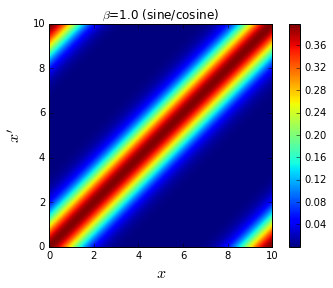
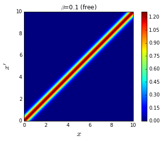

Density Matrix and Path Integral
- Naive Harmonic Path
import math, random
def rho_free(x, y, beta): # free off-diagonal density matrix
return math.exp(-(x - y) ** 2 / (2.0 * beta))
beta = 4.0
N = 8 # number of slices
dtau = beta / N
delta = 1.0 # maximum displacement on one slice
n_steps = 10 # number of Monte Carlo steps
x = [0.0] * N # initial path
for step in range(n_steps):
k = random.randint(0, N - 1) # random slice
knext, kprev = (k + 1) % N, (k - 1) % N # next/previous slices
x_new = x[k] + random.uniform(-delta, delta) # new position at slice k
old_weight = (rho_free(x[knext], x[k], dtau) *
rho_free(x[k], x[kprev], dtau) *
math.exp(-0.5 * dtau * x[k] ** 2))
new_weight = (rho_free(x[knext], x_new, dtau) *
rho_free(x_new, x[kprev], dtau) *
math.exp(-0.5 * dtau * x_new ** 2))
if random.uniform(0.0, 1.0) < new_weight / old_weight:
x[k] = x_new
print x
[0.0, 0.0, 0.0, -0.9503347336313315, 0.0, 0.0, 0.0, 0.0]
[0.0, 0.0, 0.0, -0.9503347336313315, 0.0, 0.0, 0.0, 0.0]
[-0.1902541007130032, 0.0, 0.0, -0.9503347336313315, 0.0, 0.0, 0.0, 0.0]
[0.3502387271176708, 0.0, 0.0, -0.9503347336313315, 0.0, 0.0, 0.0, 0.0]
[0.3502387271176708, 0.0, 0.0, -0.9503347336313315, 0.0, 0.0, 0.0, 0.0]
[0.3502387271176708, 0.0, 0.0, -0.9503347336313315, 0.0, 0.0, 0.0, 0.0]
[0.3502387271176708, 0.0, 0.0, -0.9503347336313315, 0.0, 0.0, 0.0, 0.0]
[0.3502387271176708, 0.0, 0.0, -0.9503347336313315, 0.0, -0.2691021744359521, 0.0, 0.0]
[0.3502387271176708, 0.0, 0.0, -0.9503347336313315, 0.0, -0.2691021744359521, -0.05409984381515698, 0.0]
[0.3502387271176708, 0.0, 0.0, -0.9503347336313315, 0.0, -0.2691021744359521, -0.05409984381515698, 0.0]
- Naive Harmonic Path Movie
%matplotlib inline
import math, random, pylab, os
def rho_free(x, y, beta): # free off-diagonal density matrix
return math.exp(-(x - y) ** 2 / (2.0 * beta))
output_dir = 'snapshots_naive_harmonic_path'
if not os.path.exists(output_dir): os.makedirs(output_dir)
def show_path(x, k, x_old, Accepted, step):
path = x + [x[0]]
y_axis = range(len(x) + 1)
if Accepted:
old_path = x[:]
old_path[k] = x_old
old_path = old_path + [old_path[0]]
pylab.plot(old_path, y_axis, 'ro--', label='old path')
pylab.plot(path, y_axis, 'bo-', label='new path')
pylab.legend()
pylab.xlim(-5.0, 5.0)
pylab.xlabel('$x$', fontsize=14)
pylab.ylabel('$\\tau$', fontsize=14)
pylab.title('Naive path integral Monte Carlo, step %i' % step)
#pylab.savefig(output_dir + '/snapshot_%05i.png' % step)
#pylab.clf()
pylab.show()
beta = 4.0
N = 8 # number of slices
dtau = beta / N
delta = 1.0 # maximum displacement on one slice
n_steps = 4 # number of Monte Carlo steps
x = [random.uniform(-1.0, 1.0) for k in range(N)] # initial path
show_path(x, 0, 0.0, False, 0)
for step in range(n_steps):
print 'step',step
k = random.randint(0, N - 1) # randomly choose slice
knext, kprev = (k + 1) % N, (k - 1) % N # next/previous slices
x_old = x[k]
x_new = x[k] + random.uniform(-delta, delta) # new position at slice k
old_weight = (rho_free(x[knext], x_old, dtau) *
rho_free(x_old, x[kprev], dtau) *
math.exp(-0.5 * dtau * x_old ** 2))
new_weight = (rho_free(x[knext], x_new, dtau) *
rho_free(x_new, x[kprev], dtau) *
math.exp(-0.5 * dtau * x_new ** 2))
if random.uniform(0.0, 1.0) < new_weight / old_weight:
x[k] = x_new
Accepted = True
else:
Accepted = False
show_path(x, k, x_old, Accepted, step + 1)

step 0

step 1

step 2
step 3

- Matrix Square Harmonic
import math, numpy
# Free off-diagonal density matrix
def rho_free(x, xp, beta):
return (math.exp(-(x - xp) ** 2 / (2.0 * beta)) /
math.sqrt(2.0 * math.pi * beta))
# Harmonic density matrix in the Trotter approximation (returns the full matrix)
def rho_harmonic_trotter(grid, beta):
return numpy.array([[rho_free(x, xp, beta) * \
numpy.exp(-0.5 * beta * 0.5 * (x ** 2 + xp ** 2)) \
for x in grid] for xp in grid])
x_max = 5.0 # the x range is [-x_max,+x_max]
nx = 100
dx = 2.0 * x_max / (nx - 1)
x = [i * dx for i in range(-(nx - 1) / 2, nx / 2 + 1)]
beta_tmp = 2.0 ** (-5) # initial value of beta (power of 2)
beta = 2.0 ** 4 # actual value of beta (power of 2)
rho = rho_harmonic_trotter(x, beta_tmp) # density matrix at initial beta
while beta_tmp < beta:
rho = numpy.dot(rho, rho)
rho *= dx
beta_tmp *= 2.0
print 'beta: %s -> %s' % (beta_tmp / 2.0, beta_tmp)
beta: 0.03125 -> 0.0625
beta: 0.0625 -> 0.125
beta: 0.125 -> 0.25
beta: 0.25 -> 0.5
beta: 0.5 -> 1.0
beta: 1.0 -> 2.0
beta: 2.0 -> 4.0
beta: 4.0 -> 8.0
beta: 8.0 -> 16.0
- Matrix Square Harmonic Movie
import math, numpy, pylab
# Free off-diagonal density matrix
def rho_free(x, xp, beta):
return (math.exp(-(x - xp) ** 2 / (2.0 * beta)) /
math.sqrt(2.0 * math.pi * beta))
# Harmonic density matrix in the Trotter approximation (returns the full matrix)
def rho_harmonic_trotter(grid, beta):
return numpy.array([[rho_free(x, xp, beta) * \
numpy.exp(-0.5 * beta * 0.5 * (x ** 2 + xp ** 2)) \
for x in grid] for xp in grid])
x_max = 5.0 # the x range is [-x_max,+x_max]
nx = 100
dx = 2.0 * x_max / (nx - 1)
x = [i * dx for i in range(-(nx - 1) / 2, nx / 2 + 1)]
beta_tmp = 2.0 ** (-8) # initial value of beta (power of 2)
beta = 2.0 ** 2 # actual value of beta (power of 2)
rho = rho_harmonic_trotter(x, beta_tmp) # density matrix at initial beta
while beta_tmp < beta:
rho = numpy.dot(rho, rho)
rho *= dx
beta_tmp *= 2.0
# graphics output
pylab.imshow(rho, extent=[-x_max, x_max, -x_max, x_max], origin='lower')
pylab.colorbar()
pylab.title('$\\beta = 2^{%i}$' % math.log(beta, 2))
pylab.xlabel('$x$', fontsize=18)
pylab.ylabel('$x\'$', fontsize=18)
#pylab.savefig('plot-harmonic-rho.png')
pylab.show()

- Harmonic Wave Function
import math
n_states = 4
grid_x = [i * 0.2 for i in range(-25, 26)]
psi = {}
for x in grid_x:
psi[x] = [math.exp(-x ** 2 / 2.0) / math.pi ** 0.25] # ground state
psi[x].append(math.sqrt(2.0) * x * psi[x][0]) # first excited state
# other excited states (through recursion):
for n in range(2, n_states):
psi[x].append(math.sqrt(2.0 / n) * x * psi[x][n - 1] -
math.sqrt((n - 1.0) / n) * psi[x][n - 2])
for n in range(n_states):
print 'level %i:' % n, [psi[x][n] for x in grid_x]
level 0: [2.7991843929095964e-06, 7.458304327999357e-06, 1.9093120491923166e-05, 4.696149856362874e-05, 0.00011097756752308872, 0.0002519745490309146, 0.0005496754903223565, 0.0011520843816137305, 0.002320013042709098, 0.004488743450746296, 0.008344251073246413, 0.014903153092645628, 0.025573912975171406, 0.042164254297199076, 0.06679129832888486, 0.10165378830641791, 0.14864676809808386, 0.2088409186844682, 0.2819057534684933, 0.3656120532774727, 0.4555806720113325, 0.5454290908346697, 0.6273927923216392, 0.6933762682841502, 0.7362522621713508, 0.7511255444649425, 0.7362522621713508, 0.6933762682841502, 0.6273927923216392, 0.5454290908346697, 0.4555806720113325, 0.3656120532774727, 0.2819057534684933, 0.2088409186844682, 0.14864676809808386, 0.10165378830641791, 0.06679129832888486, 0.042164254297199076, 0.025573912975171406, 0.014903153092645628, 0.008344251073246413, 0.004488743450746296, 0.002320013042709098, 0.0011520843816137305, 0.0005496754903223565, 0.0002519745490309146, 0.00011097756752308872, 4.696149856362874e-05, 1.9093120491923166e-05, 7.458304327999357e-06, 2.7991843929095964e-06]
level 1: [-1.979322266017925e-05, -5.06286486382207e-05, -0.00012420804975942648, -0.000292219787983413, -0.0006591731206633777, -0.0014253832984494556, -0.0029539624266082393, -0.00586545608691489, -0.011155379293597705, -0.020313733971388224, -0.035401659106893996, -0.05901347543207756, -0.09403413388833536, -0.1431102246586728, -0.20780575187947614, -0.2875203321790795, -0.3783928958050294, -0.4725530553312507, -0.5581449158126092, -0.620464229174492, -0.6442883651134752, -0.6170825740569735, -0.5323604375018335, -0.3922328489740365, -0.20824358689811923, 0.0, 0.20824358689811923, 0.3922328489740365, 0.5323604375018335, 0.6170825740569735, 0.6442883651134752, 0.620464229174492, 0.5581449158126092, 0.4725530553312507, 0.3783928958050294, 0.2875203321790795, 0.20780575187947614, 0.1431102246586728, 0.09403413388833536, 0.05901347543207756, 0.035401659106893996, 0.020313733971388224, 0.011155379293597705, 0.00586545608691489, 0.0029539624266082393, 0.0014253832984494556, 0.0006591731206633777, 0.000292219787983413, 0.00012420804975942648, 5.06286486382207e-05, 1.979322266017925e-05]
level 2: [9.698679103487833e-05, 0.0002377436958969781, 0.0005578561539195112, 0.001252560273037993, 0.0026900541162310225, 0.0055233602814916405, 0.010836377954452331, 0.020300995234155426, 0.036287792643291364, 0.061829927775412914, 0.10030470080286633, 0.15469961059694617, 0.2264052608234536, 0.31364990904359125, 0.4099440741622393, 0.5031605813133891, 0.5759980747254336, 0.6084120587389853, 0.5820654122045782, 0.48603031285335224, 0.3221441825567376, 0.10798945045997044, -0.12421743541709435, -0.3333979216279309, -0.4789602498656741, -0.5311259660135985, -0.4789602498656741, -0.3333979216279309, -0.12421743541709435, 0.10798945045997044, 0.3221441825567376, 0.48603031285335224, 0.5820654122045782, 0.6084120587389853, 0.5759980747254336, 0.5031605813133891, 0.4099440741622393, 0.31364990904359125, 0.2264052608234536, 0.15469961059694617, 0.10030470080286633, 0.061829927775412914, 0.036287792643291364, 0.020300995234155426, 0.010836377954452331, 0.0055233602814916405, 0.0026900541162310225, 0.001252560273037993, 0.0005578561539195112, 0.0002377436958969781, 9.698679103487833e-05]
level 3: [-0.0003797858177480724, -0.0008904230727075194, -0.0019938277067416796, -0.004261332735734368, -0.008686751352074272, -0.01687539855058424, -0.031209988866398874, -0.05488337067267696, -0.09162979026487528, -0.14496246447491137, -0.2167900021496088, -0.3054884678261664, -0.4038551667423139, -0.4977767788921179, -0.5667067709284037, -0.5868984204285561, -0.5375843198695371, -0.40898823122401184, -0.209632771094667, 0.030396415302535507, 0.26302962362333343, 0.4333073982061352, 0.4955243438272363, 0.42914408535388815, 0.24824405798556262, -0.0, -0.24824405798556262, -0.42914408535388815, -0.4955243438272363, -0.4333073982061352, -0.26302962362333343, -0.030396415302535507, 0.209632771094667, 0.40898823122401184, 0.5375843198695371, 0.5868984204285561, 0.5667067709284037, 0.4977767788921179, 0.4038551667423139, 0.3054884678261664, 0.2167900021496088, 0.14496246447491137, 0.09162979026487528, 0.05488337067267696, 0.031209988866398874, 0.01687539855058424, 0.008686751352074272, 0.004261332735734368, 0.0019938277067416796, 0.0008904230727075194, 0.0003797858177480724]
- Harmonic Wave Function Movie
import math, pylab
n_states = 50
grid_x = [i * 0.1 for i in range(-50, 51)]
psi = {}
for x in grid_x:
psi[x] = [math.exp(-x ** 2 / 2.0) / math.pi ** 0.25] # ground state
psi[x].append(math.sqrt(2.0) * x * psi[x][0]) # first excited state
# other excited states (through recursion):
for n in range(2, n_states):
psi[x].append(math.sqrt(2.0 / n) * x * psi[x][n - 1] -
math.sqrt((n - 1.0) / n) * psi[x][n - 2])
# graphics output
for n in range(n_states):
shifted_psi = [psi[x][n] + n for x in grid_x] # vertical shift
pylab.plot(grid_x, shifted_psi)
pylab.title('Harmonic oscillator wavefunctions')
pylab.xlabel('$x$', fontsize=16)
pylab.ylabel('$\psi_n(x)$ (shifted)', fontsize=16)
pylab.xlim(-5.0, 5.0)
#pylab.savefig('plot-harmonic_wavefunction.png')
pylab.show()
- Harmonic Wave Function Check
import math
def orthonormality_check(n, m):
integral_n_m = sum(psi[n][i] * psi[m][i] for i in range(nx)) * dx
return integral_n_m
nx = 10
L = 10.0
dx = L / (nx - 1)
x = [- L / 2.0 + i * dx for i in range(nx)]
n_states = 4
psi = [[math.exp(-x[i] ** 2 / 2.0) / math.pi ** 0.25 for i in range(nx)]]
psi.append([math.sqrt(2.0) * x[i] * psi[0][i] for i in range(nx)])
for n in range(2, n_states):
psi.append([math.sqrt(2.0 / n) * x[i] * psi[n - 1][i] - \
math.sqrt((n - 1.0) / n) * psi[n - 2][i] for i in range(nx)])
n = n_states - 1
print 'checking energy level', n
H_psi = [0.0] + [(- 0.5 * (psi[n][i + 1] - 2.0 * psi[n][i] + psi[n][i - 1]) /
dx ** 2 + 0.5 * x[i] ** 2 * psi[n][i]) for i in range(1, nx - 1)]
for i in range(1, nx - 1):
print n, x[i], H_psi[i] / psi[n][i]
checking energy level 3
3 -3.88888888889 3.00668022555
3 -2.77777777778 4.04737813751
3 -1.66666666667 2.35349806276
3 -0.555555555556 1.7484816623
3 0.555555555556 1.7484816623
3 1.66666666667 2.35349806276
3 2.77777777778 4.04737813751
3 3.88888888889 3.00668022555
- Harmonic Wave Function Check Movie
import math, pylab
nx = 300 # nx is even, to avoid division by zero
L = 10.0
dx = L / (nx - 1)
x = [- L / 2.0 + i * dx for i in range(nx)]
# construct wavefunctions:
n_states = 4
psi = [[math.exp(-x[i] ** 2 / 2.0) / math.pi ** 0.25 for i in range(nx)]] # ground state
psi.append([math.sqrt(2.0) * x[i] * psi[0][i] for i in range(nx)]) # first excited state
for n in range(2, n_states):
psi.append([math.sqrt(2.0 / n) * x[i] * psi[n - 1][i] - \
math.sqrt((n - 1.0) / n) * psi[n - 2][i] for i in range(nx)])
# local energy check:
H_psi_over_psi = []
for n in range(n_states):
H_psi = [(- 0.5 * (psi[n][i + 1] - 2.0 * psi[n][i] + psi[n][i - 1])
/ dx ** 2 + 0.5 * x[i] ** 2 * psi[n][i]) for i in range(1, nx - 1)]
H_psi_over_psi.append([H_psi[i] / psi[n][i+1] for i in range(nx - 2)])
# graphics output:
for n in range(n_states):
pylab.plot(x[1:-1], [n + 0.5 for i in x[1:-1]], 'k--', lw=1.5)
pylab.plot(x[1:-1], H_psi_over_psi[n], '-', lw=1.5)
pylab.xlabel('$x$', fontsize=18)
pylab.ylabel('$H \psi_%i(x)/\psi_%i(x)$' % (n, n), fontsize=18)
pylab.xlim(x[0], x[-1])
pylab.ylim(n, n + 1)
pylab.title('Schroedinger equation check (local energy)')
#pylab.savefig('plot-check_schroedinger_energy-%i.png' % n)
pylab.show()

TUTORIAL
- Free Periodic Complex Exp
import math, cmath
ntot = 21 # odd number
beta = 1.0
nx = 100
L = 10.0
x = [i * L / float(nx - 1) for i in range(nx)]
rho_complex = []
for i in range(nx):
rho_complex.append([sum(
math.exp(- 2.0 * beta * (math.pi * n / L) ** 2) *
cmath.exp(1j * 2.0 * n * math.pi * (x[i] - x[j]) / L) / L
for n in range(-(ntot - 1) / 2, (ntot + 1) / 2))
for j in range(nx)])
rho_real = [[rho_complex[i][j].real for i in range(nx)] for j in range(nx)]
- Free Periodic Complex Movie
import math, cmath, pylab
ntot = 21 # odd number
beta = 1.0
nx = 100
L = 10.0
x = [i * L / float(nx - 1) for i in range(nx)]
rho_complex = []
for i in range(nx):
rho_complex.append([sum(
math.exp(- 2.0 * beta * (math.pi * n / L) ** 2) *
cmath.exp(1j * 2.0 * n * math.pi * (x[i] - x[j]) / L) / L
for n in range(-(ntot - 1) / 2, (ntot + 1) / 2))
for j in range(nx)])
rho_real = [[rho_complex[i][j].real for i in range(nx)] for j in range(nx)]
# graphics output
pylab.imshow(rho_real, extent=[0.0, L, 0.0, L], origin='lower')
pylab.colorbar()
pylab.title('$\\beta$=%s (complex exp)' % beta)
pylab.xlabel('$x$', fontsize=16)
pylab.ylabel('$x\'$', fontsize=16)
#pylab.savefig('plot-periodic-complex.png')
pylab.show()

- Periodic Sine Cosine
import math
# simmetric wavefunctions
def psi_s(x, L, n):
return math.sqrt(2.0 / L) * math.cos(2.0 * n * math.pi * x / L)
# antysimmetric wavefunctions
def psi_a(x, L, n):
return math.sqrt(2.0 / L) * math.sin(2.0 * n * math.pi * x / L)
ntot = 21 # odd number
beta = 1.0
nx = 100
L = 10.0
x = [i * L / float(nx - 1) for i in range(nx)]
rho = []
for i in range(nx):
rho.append([1.0 / L + sum(
math.exp(- beta * 2.0 * (math.pi * n / L) ** 2) *
(psi_s(x[i], L, n) * psi_s(x[j], L, n) +
psi_a(x[i], L, n) * psi_a(x[j], L, n) )
for n in range(1, (ntot + 1) / 2))
for j in range(nx)])
- Periodic Sine Cosine Movie
import math, pylab
# simmetric wavefunctions
def psi_s(x, L, n):
return math.sqrt(2.0 / L) * math.cos(2.0 * n * math.pi * x / L)
# antysimmetric wavefunctions
def psi_a(x, L, n):
return math.sqrt(2.0 / L) * math.sin(2.0 * n * math.pi * x / L)
ntot = 21 # odd number
beta = 1.0
nx = 100
L = 10.0
x = [i * L / float(nx - 1) for i in range(nx)]
rho = []
for i in range(nx):
rho.append([1.0 / L + sum(
math.exp(- beta * 2.0 * (math.pi * n / L) ** 2) *
(psi_s(x[i], L, n) * psi_s(x[j], L, n) +
psi_a(x[i], L, n) * psi_a(x[j], L, n) )
for n in range(1, (ntot + 1) / 2))
for j in range(nx)])
# graphics output
pylab.imshow(rho, extent=[0.0, L, 0.0, L], origin='lower')
pylab.colorbar()
pylab.title('$\\beta$=%s (sine/cosine)' % beta)
pylab.xlabel('$x$', fontsize=16)
pylab.ylabel('$x\'$', fontsize=16)
#pylab.savefig('plot-periodic-sine_cosine.png')
pylab.show()

- Quantum Time Evolution
import numpy, pylab, os
def fourier_x_to_p(phi_x, dx):
phi_p = [(phi_x * numpy.exp(-1j * p * grid_x)).sum() * dx for p in grid_p]
return numpy.array(phi_p)
def fourier_p_to_x(phi_p, dp):
phi_x = [(phi_p * numpy.exp(1j * x * grid_p)).sum() for x in grid_x]
return numpy.array(phi_x) / (2.0 * numpy.pi)
def time_step_evolution(psi0, potential, grid_x, grid_p, dx, dp, delta_t):
psi0 = numpy.exp(-1j * potential * delta_t / 2.0) * psi0
psi0 = fourier_x_to_p(psi0, dx)
psi0 = numpy.exp(-1j * grid_p ** 2 * delta_t / 2.0) * psi0
psi0 = fourier_p_to_x(psi0, dp)
psi0 = numpy.exp(-1j * potential * delta_t / 2.0) * psi0
psi0 /= (numpy.absolute(psi0 ** 2).sum() * dx)
return psi0
def funct_potential(x):
if x < -8.0: return (x + 8.0) ** 2
elif x <= -1.0: return 0.0
elif x < 1.0: return numpy.exp(-1.0 / (1.0 - x ** 2)) / numpy.exp(-1.0)
else: return 0.0
output_dir = 'snapshots_time_evolution'
if not os.path.exists(output_dir): os.makedirs(output_dir)
def show(x, psi, pot, time, timestep):
pylab.plot(x, psi, 'g', linewidth = 2.0, label = '$|\psi(x)|^2$')
pylab.xlim(-10, 15)
pylab.ylim(-0.1, 1.15)
pylab.plot(x, pot, 'k', linewidth = 2.0, label = '$V(x)$')
pylab.xlabel('$x$', fontsize = 20)
pylab.title('time = %s' % time)
pylab.legend(loc=1)
#pylab.savefig(output_dir + '/snapshot_%05i.png' % timestep)
timestep += 1
#pylab.clf()
pylab.show()
steps = 800
x_min = -12.0
x_max = 40.0
grid_x = numpy.linspace(x_min, x_max, steps)
grid_p = numpy.linspace(x_min, x_max, steps)
dx = grid_x[1] - grid_x[0]
dp = grid_p[1] - grid_p[0]
delta_t = 0.1
t_max = 1.0
potential = [funct_potential(x) for x in grid_x]
potential = numpy.array(potential)
# initial state:
x0 = -8.0
sigma = .5
psi = numpy.exp(-(grid_x - x0) ** 2 / (2.0 * sigma ** 2) )
psi /= numpy.sqrt( sigma * numpy.sqrt( numpy.pi ) )
# time evolution
time = 0.0
timestep = 0
while time < t_max:
if timestep % 4 == 0:
show(grid_x, numpy.absolute(psi) ** 2.0, potential, time, timestep)
print time
time += delta_t
timestep += 1
psi = time_step_evolution(psi, potential, grid_x, grid_p, dx, dp, delta_t)
0.0
0.1
0.2
0.3
0.4
0.5
0.6
0.7
0.8
0.9
1.0
- Harmonic Totter
import math, pylab
# density matrix for a free particle (exact)
def funct_rho_free(x, xp, beta):
return (math.exp(-(x - xp) ** 2 / (2.0 * beta)) /
math.sqrt(2.0 * math.pi * beta))
beta = 0.1
nx = 300
L = 10.0
x = [-L / 2.0 + i * L / float(nx - 1) for i in range(nx)]
rho_free, rho_harm = [], []
for i in range(nx):
rho_free.append([funct_rho_free(x[i], x[j], beta) for j in range(nx)])
rho_harm.append([rho_free[i][j] * math.exp(- beta * x[i] ** 2 / 4.0 -
beta * x[j] ** 2 / 4.0) for j in range(nx)])
# graphics output (free particle)
pylab.imshow(rho_free, extent=[0.0, L, 0.0, L], origin='lower')
pylab.xlabel('$x$', fontsize=16)
pylab.ylabel('$x\'$', fontsize=16)
pylab.colorbar()
pylab.title('$\\beta$=%s (free)' % beta)
#pylab.savefig('plot-trotter-free.png')
#pylab.clf()
pylab.show()
# graphics output (harmonic potential)
pylab.imshow(rho_harm, extent=[0.0, L, 0.0, L], origin='lower')
pylab.xlabel('$x$', fontsize=16)
pylab.ylabel('$x\'$', fontsize=16)
pylab.colorbar()
pylab.title('$\\beta$=%s (harmonic)' % beta)
#pylab.savefig('plot-trotter-harmonic.png')
pylab.show()
